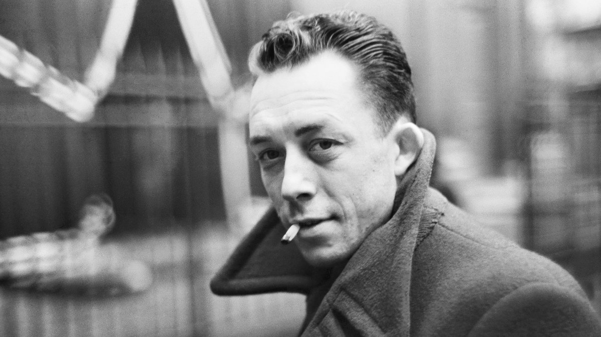

"Yo decía que el mundo es absurdo y me adelantaba demasiado. Todo lo que se puede decir es que este mundo, en sí mismo, no es razonable. Pero lo que resulta absurdo es la confrontación de ese irracional y ese deseo desenfrenado de claridad cuyo llamamiento resuena en lo más profundo del hombre. Lo absurdo depende tanto del hombre como del mundo. Es por el momento su único lazo. Une el uno al otro como sólo el odio puede unir a los seres."
más +Arrastrar la piedra sabiendola sepultura eterna, infinita. Así el Sísifo de jornada partida recibe la piedra mientras le comen el hígado, mientras se convierte en piedra, a la espera de que cierran la caja de Pandora, al menos durante 8 horas, o hasta que Amazon la convierta en servicio prime o hasta que todos seamos los mensajeros de Marathon, o hasta que La Tempestad se lleve las cosechas de Monsanto. Ser Troya o ser un caballo, hasta que la piedra vuelva a bajar. Sísifo, calienta que sales.
más +